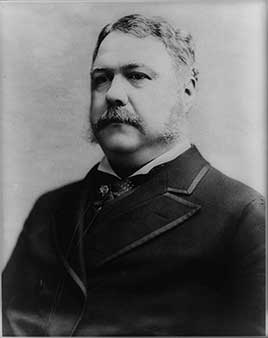

A product of Senator Roscoe Conkling's New York machine whom Hayes had fired as customs collector. He became president when Garfield died and surprised his critics by signing the Pendleton Act, which created the merit-based civil service. He also signed the Chinese Exclusion Act, began rebuilding the Navy, and hid that he had a fatal kidney disease.
Shaded areas show the years in office, with a few years before and after for comparison. Budget years ran July to June until 1976 (now October to September), so each year's figures cover parts of two calendar years.
June 30, 1881 (end of fiscal 1881): $2.07 billion → June 30, 1884 (end of fiscal 1884): $1.83 billion
Daily debt figures don't exist before 1993, so Arthur's numbers use the fiscal years closest to his term, the same rule as every other page.
Debt as a share of GDP. Above 100% means the debt is bigger than a year of everything the country produces.
Money borrowed each budget year (below the line) or paid down (above). The White House budget office's yearly figures begin in 1901.
No national estimates before 1890. Economist Stanley Lebergott's yearly estimates, the earliest national series, begin in 1890
How much prices rose each year (consumer price index).
What everyday prices and paychecks did while in office.
Prices use the consumer price index (MeasuringWorth). The minimum wage is the federal rate set by Congress.
96 orders. Count from the American Presidency Project.
Yearly counts aren't reliable for this era. Orders were not numbered until 1907, when the State Department numbered the ones already in its files, and many orders were never numbered at all, so only the total is shown.
Source: American Presidency Project: executive orders (full list of every order).
Most orders in this era were routine, such as setting aside public land or exempting jobs from civil service rules.
Incomplete: orders before 1929 were not numbered or collected consistently. This archive has 72 of the roughly 96 orders counted for this president.
Source: Executive Orders Archive, compiled from the American Presidency Project and the Federal Register. Topics are the archive's automated tags; "Revoked" and similar labels come from the Federal Register's records.
A pardon wipes out the punishment for a federal crime; a commutation shortens a sentence but leaves the conviction. The Justice Department's published counts begin in 1900.
The Justice Department's published clemency counts begin in fiscal 1900, so there are no reliable yearly totals for this presidency.
Source: U.S. Dept. of Justice, clemency statistics, which lists every recipient with the crime and sentence.
No individual grants from this presidency are highlighted yet.
The same checklist for every president. Tap a row for details and sources.
No articles of impeachment were voted on.
Never charged.
No member of his cabinet or White House staff was convicted. Defendants in the Star Route postal fraud cases, including his 1880 campaign ally Stephen Dorsey, were acquitted.
His Justice Department hired outside special prosecutors to try the Star Route mail-contract fraud cases in 1882–83.
SourceNo official investigation found he used federal agencies against opponents.
What happened, what was proven, and how it ended.
After vetoing a 20-year version, Arthur signed a 10-year ban on Chinese laborers, the first U.S. law to bar immigrants by nationality.
Outcome: It was extended and made permanent, and repealed in 1943. Congress formally expressed regret in 2011 and 2012.
SourceContractors and postal officials were accused of padding payments for rural mail routes by millions of dollars.
Outcome: All the main defendants were acquitted.
SourceAs collector of the Port of New York, Arthur ran a patronage operation in which employees were hired for party loyalty and expected to pay political assessments.
Outcome: A federal commission found the office overstaffed and politicized in 1877; Hayes fired him in 1878.
SourceArthur learned he had Bright's disease, a fatal kidney condition, early in his term and kept it secret.
Outcome: He made only a token effort for the 1884 nomination and died in November 1886.
SourceWidely quoted remarks, with the context they were said in.
Men may die, but the fabrics of our free institutions remain unshaken.